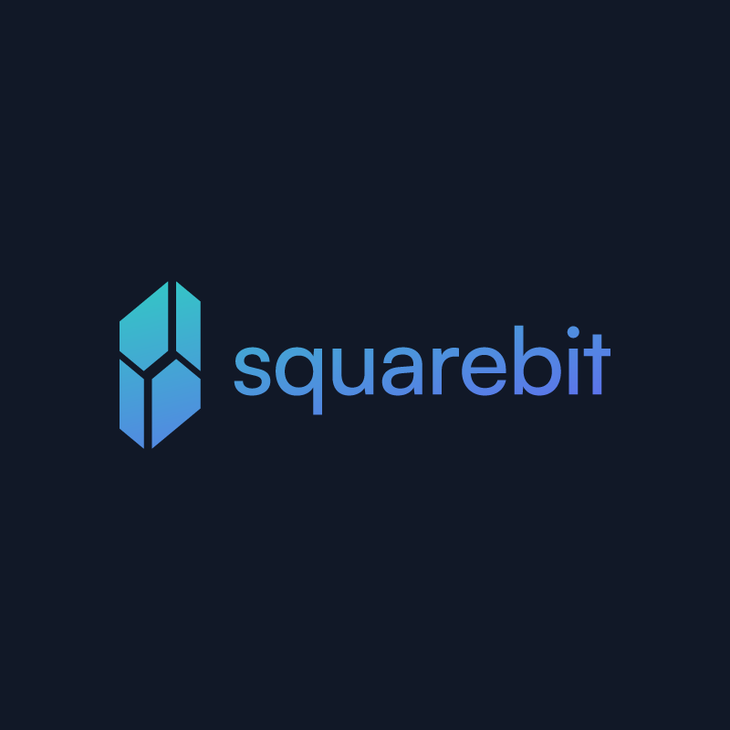
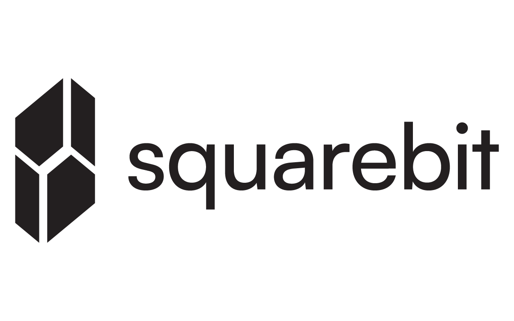
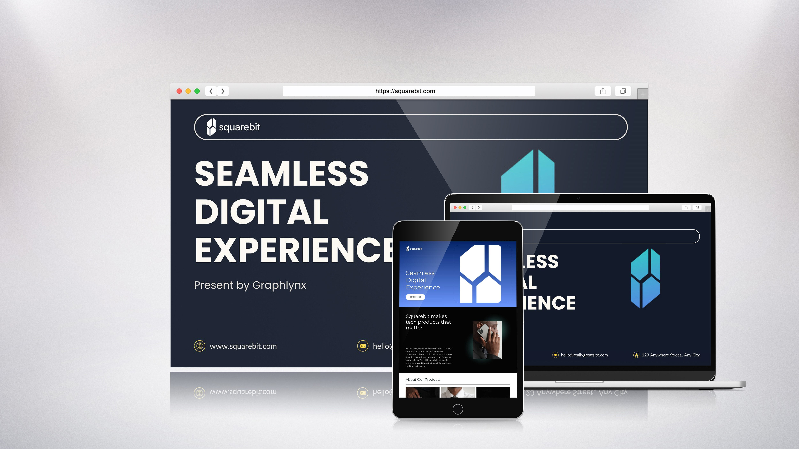
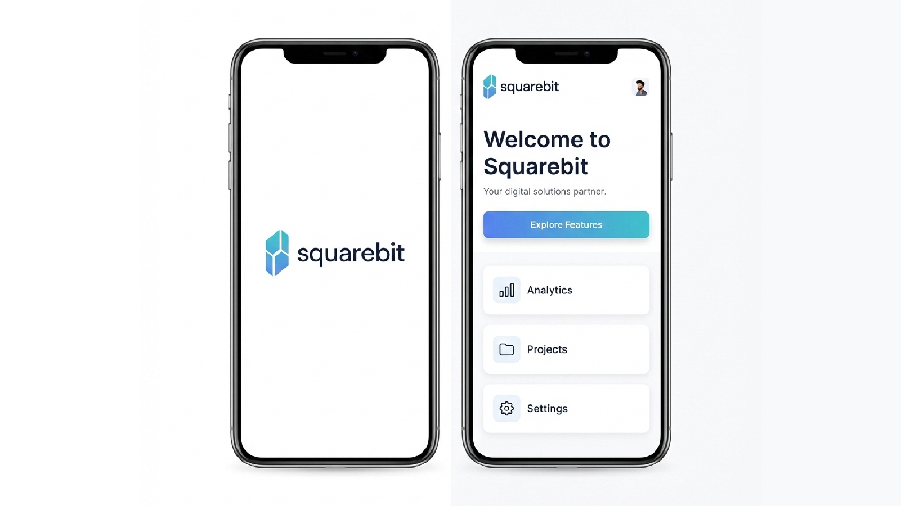
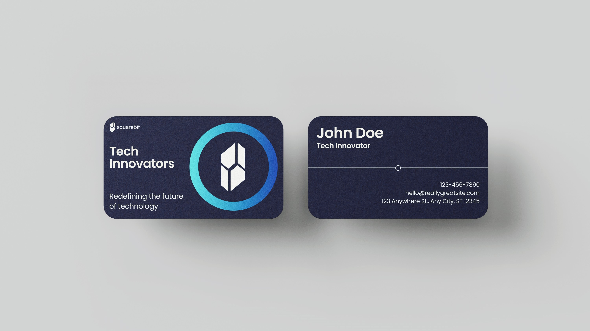
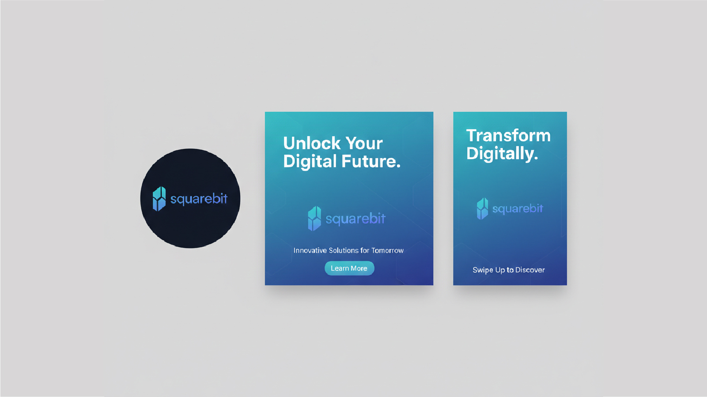

Squarebit
Minimal Tech Identity for a Digital Brand
Details
- Project Type
- Concept Brand Identity
- Industry
- Digital Products / Technology
- Year
- 2024
Scope
- Services
-
- Logo Concept
- Visual Direction
- Brand Exploration
- Tools
-
- Adobe Illustrator
- Photoshop
The Brief
Squarebit was explored as a conceptual tech brand focused on clarity, structure, and modern digital appeal. The objective was to create a minimal identity that feels reliable, scalable, and visually aligned with contemporary technology platforms.
Concept & Thinking
The logo is built around a geometric symbol that merges architectural structure with digital block forms. The mark references both physical solidity and digital systems, creating a balanced identity suited for modern tech-driven brands. Simplicity and precision guided every design decision.
The icon represents a cube constructed from modular segments, subtly referencing both digital building blocks and architectural forms. This dual meaning reflects structure, stability, and innovation—key values within modern technology-focused brands.
- Geometric symbol inspired by modular blocks and vertical structures
- Minimal construction to ensure clarity and memorability
- Scalable form that performs across digital interfaces
- Modern color gradient to add depth without visual noise
Typography
The wordmark is set in Satoshi Medium, a contemporary geometric sans-serif chosen for its clarity, balance, and modern digital character. The typeface supports the logo's structural precision while remaining clean and highly legible across interfaces.
Lowercase letterforms introduce approachability, while consistent stroke weight and spacing reinforce a confident, tech-forward aesthetic. The typography complements the geometric icon without competing for attention.
Color Palette
The color system is built around a modern blue-to-violet gradient using #2DD4BF and #6366F1, paired with neutral foundations. This palette reinforces a clean, tech-driven presence while remaining adaptable across digital environments.
Primary Gradient
#2DD4BF → #6366F1
Dark Background
#1A1A1A
Light Background
#FFFFFF
Why this palette?
Teal introduces freshness and clarity, while violet adds depth and a sense of innovation.
Together, the gradient reflects modern digital products without overpowering the minimal structure of the mark.
Neutral backgrounds ensure consistent performance across light and dark applications.
Typography & Color
The Squarebit identity uses Satoshi, a clean geometric sans-serif designed for modern digital environments. Its neutral tone and balanced proportions allow the symbol to take visual priority while maintaining clarity and consistency across applications.
The color system pairs dark neutral foundations with a restrained teal-to-violet gradient. This combination introduces depth and visual interest while preserving a minimal, technology-focused aesthetic. The result is a flexible system suited for interfaces, branding, and UI-driven contexts.
- Primary Typeface: Satoshi (modern, geometric sans-serif)
- Primary Colors: #2DD4BF → #6366F1 gradient
- Contrast Strategy: Optimized for digital screens
- System Approach: Designed for light and dark environments
Logo Variations

Real-World Applications

Website
Primary digital application

Mobile App
Compact brand usage

Business Card
Print exploration

Social Media
Profile and promotional visuals
Final Outcome
The final logo delivers a clean, modern identity that balances structure with simplicity. Designed for digital-first environments, the mark remains clear and adaptable across interfaces, applications, and branding materials while maintaining a strong visual presence.